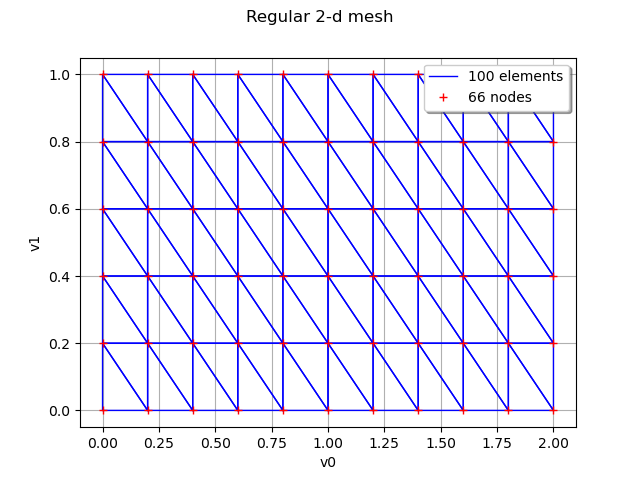
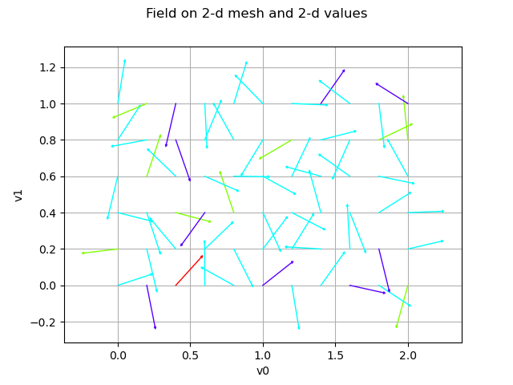
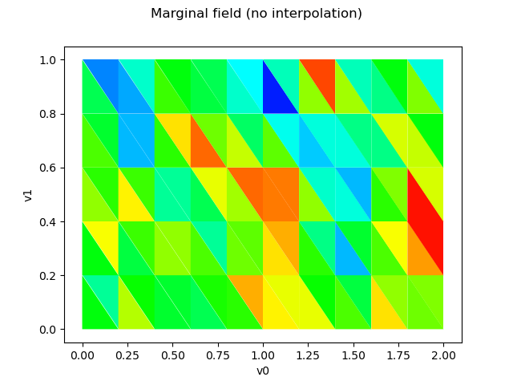
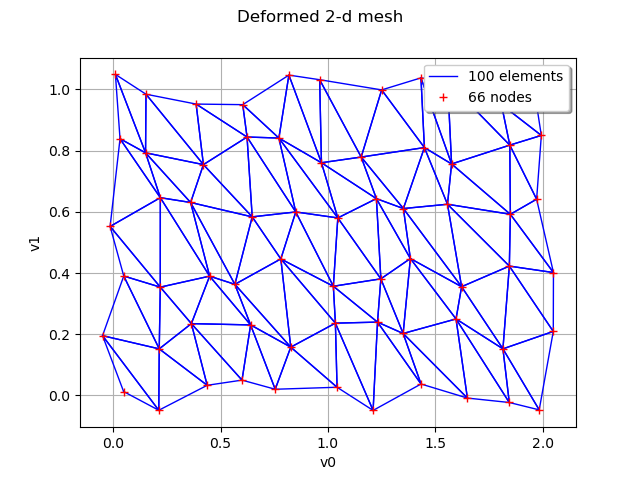

Note
Go to the end to download the full example code
Draw a field¶
The objective here is to create and manipulate a field.
A field is the agregation of a mesh  of a domain
of a domain  and a sample of values in
and a sample of values in  associated to each vertex of the mesh.
associated to each vertex of the mesh.
We note  the vertices of
and
the vertices of
and  the associated values in .
the associated values in .
A field is stored in the Field object that stores the mesh and the values at each vertex of the mesh. It can be built from a mesh and values or as a realization of a stochastic process.
import openturns as ot
import openturns.viewer as viewer
from matplotlib import pylab as plt
ot.Log.Show(ot.Log.NONE)
First, define a regular 2-d mesh
discretization = [10, 5]
mesher = ot.IntervalMesher(discretization)
lowerBound = [0.0, 0.0]
upperBound = [2.0, 1.0]
interval = ot.Interval(lowerBound, upperBound)
mesh = mesher.build(interval)
graph = mesh.draw()
graph.setTitle("Regular 2-d mesh")
view = viewer.View(graph)

Create a field as a realization of a process
amplitude = [1.0]
scale = [0.2] * 2
myCovModel = ot.ExponentialModel(scale, amplitude)
myProcess = ot.GaussianProcess(myCovModel, mesh)
field = myProcess.getRealization()
Create a field from a mesh and some values
values = ot.Normal([0.0] * 2, [1.0] * 2, ot.CorrelationMatrix(2)).getSample(
len(mesh.getVertices())
)
for i in range(len(values)):
x = values[i]
values[i] = 0.05 * x / x.norm()
field = ot.Field(mesh, values)
graph = field.draw()
graph.setTitle("Field on 2-d mesh and 2-d values")
view = viewer.View(graph)

Compute the input mean of the field
field.getInputMean()
Draw the field without interpolation
graph = field.drawMarginal(0, False)
graph.setTitle("Marginal field (no interpolation)")
view = viewer.View(graph)

Draw the field with interpolation
graph = field.drawMarginal(0)
graph.setTitle("Marginal field (with interpolation)")
view = viewer.View(graph)

Deform the mesh from the field according to the values of the field The dimension of the mesh (ie of its vertices) must be the same as the dimension of the field (ie its values)
graph = field.asDeformedMesh().draw()
graph.setTitle("Deformed 2-d mesh")
view = viewer.View(graph)

Export to the VTK format
field.exportToVTKFile("field.vtk")
with open("field.vtk") as f:
print(f.read()[:100])
plt.show()
# vtk DataFile Version 3.0
Unnamed
ASCII
DATASET UNSTRUCTURED_GRID
POINTS 66 float
0 0 0.0
0.2 0 0.